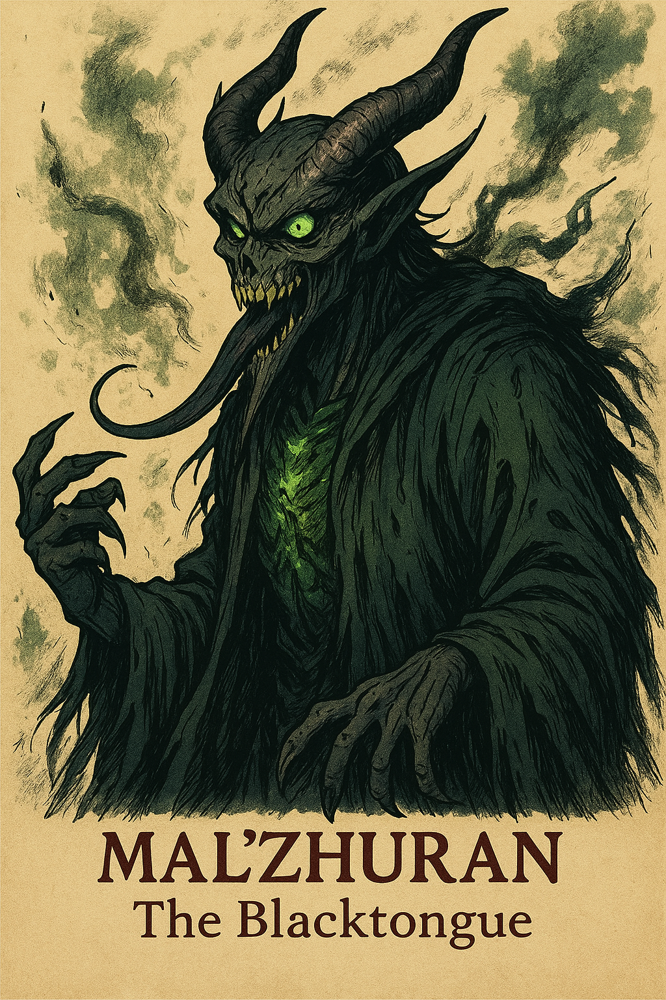

Mal’Zhuran

Alias: The Blacktongue
Age / Race / Role: 1300+ / Hollowborn Wraith / Plague Architect
Appearance: A skeletal draconic figure in tattered robes, with a cracked gray face, glowing sickly green and violet essence, and a whispering, venomous tongue.
Affinities & Energy Types: Forbidden Dark, Plague Energy, Hollow Essence, Emotional (Fear)
Threat Tier: S-Rank
Core Stats (0–10 Scale)
• Strength: 4
• Speed: 6
• Durability: 7
• Energy Output: 9
• Combat Skill: 8
• Intelligence: 10
• Aura Pressure: 9
Signature Abilities
• Virulent Spiral
• Blacktongue’s Whisper
• Pestilent Marionette
• Hollow Bloom
• Plague Requiem (Ultimate)
Personality Summary
Mal’Zhuran is poetic and deranged, obsessed with spiritual decay. He believes silence is purity, and life itself is a disease. He infects both body and mind.
Faction or Allegiances: Order of the Abyss, Cult of the Blighted, Hollowborn Heralds, Umbros’ Inner Circle